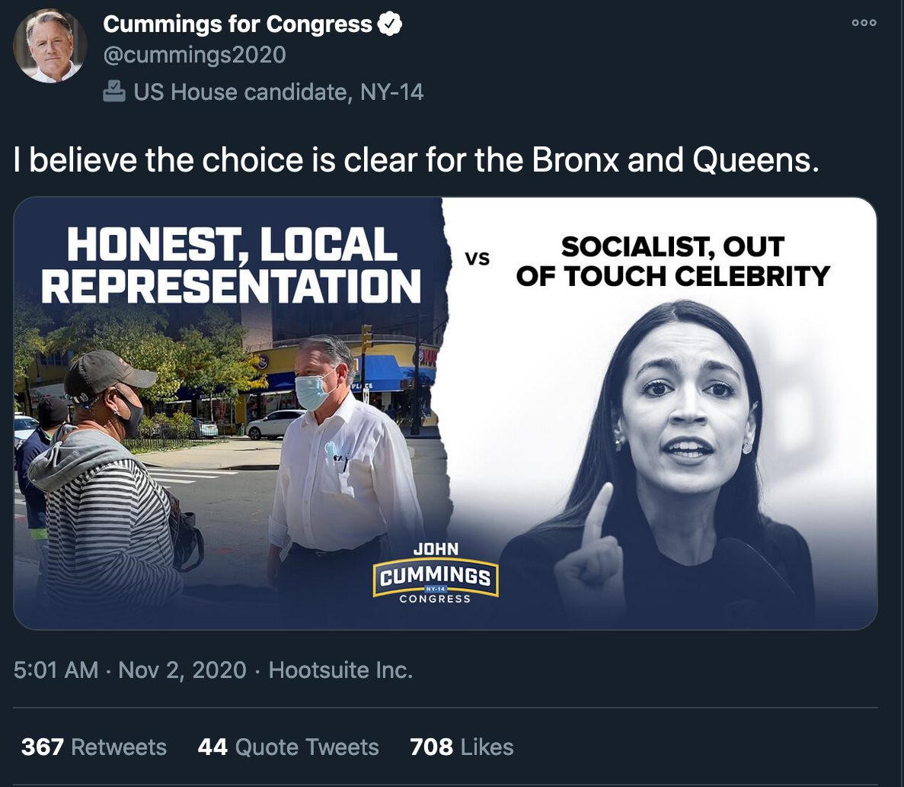
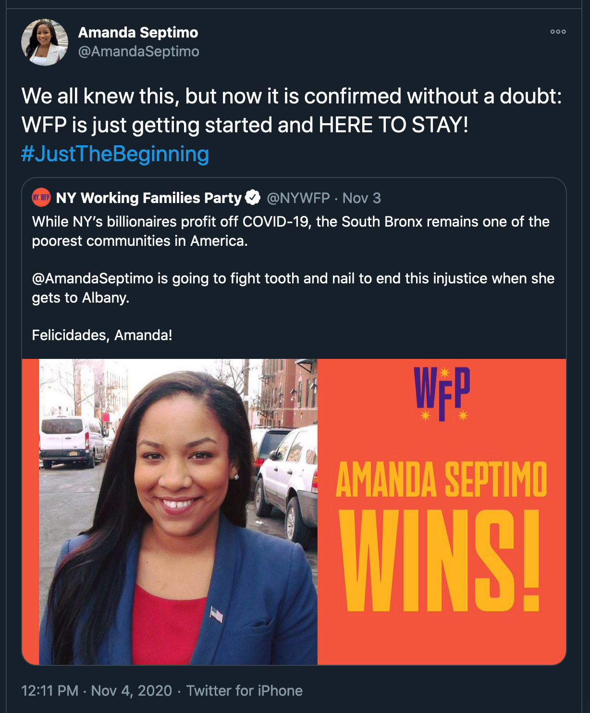

While the South Bronx remains a blue stronghold, Republicans made gains in the 2020 election.
The 2020 Presidential Election
Mott Haven, Melrose, and Port Morris Edition
The 2020 election was a remarkable event for a number of reasons. Voting was set at a record turnout, a huge amount of women and people of color were elected to office, and the COVID-19 pandemic ushered in a huge amount of early voting and mail-in ballots.
In the South Bronx, Democrats still won handily in a number of contests. However, Republican numbers trended upward in a big way.
Methodology
This story was constructed using data from the New York State Board of Elections.
Since 2008, the office has produced data on both voter enrollment and voter turnout. Voter registration is required to vote in every state except North Dakota.
In order to register, voters must indicate their politcal party such as Democrat, Republican, Green, Liberatarian or others. There is a "blank" option as well and a voter is not required to vote along party lines except in primaries or caucuses. However, according to Randy Stone, a professor of political science at the University of Rochester, party affliation is a "Fairly accurate predictor" of individual voting patterns.
"Generally, registered Democrats tend to vote with the Democratic party, same with registered Republicans," Stone said. "It's boring but true."
Additionally, based on suggestions from Stone, this study has limited the range to cover more recent elections (2014-2020) in order to avoid redistricting. Redistricting realign districts and while they have the same identification number, the boundaries have shifted.
Using mapping data, this story was able to be hyper specific with its targeting. Assembly districts selected include all the geographical areas of Mott Haven, Melrose and Port Morris to get the most detailed picture of voting trends in the area. (Potential crossover with other neighborhoods has been noted in the dataset)
Unofficial data from the NYS Board of Elections about the 2020 election has also been used. While it remains unofficial, the assembly districts vote counts used for this story were at 99% completion at the time of writing.
Since 2014, Democratic Party voter enrollment in the South Bronx has slightly increased, while Republican Party voter enrollment has stayed static.
Following statewide trends, Mott Haven, Melrose, and Port Morris have seen an overall increase in voter enrollment. 2020 numbers by the NYS Board of Elections indicate a 4.3% increase in registration.
Democrats statewide, and in the South Bronx, saw the greatest growth in registration. Some of this drive for enrollment may have come from the 2016 election itself, with some voters indicating they thought this year was of absolute importance.
"The literal first step is Donald Trump has to go," Michael Villanova, Bronx and South Westchester Sunrise Movement Hub co-coordinator said, "There's still so much work to be done on climate justice, but that's step one."
Republican enrollment, on the other hand, remained static in the area, not even reaching 1% growth.
The South Bronx is trending upward in voter turnout. 2020 looks to fall short of 2016 numbers however.
The 2020 election will likely set record numbers with voter turnout, particulary with early and youth voting. In Mott Haven, Melrose, and Port Morris however, it looks like the 2016 election will remain a high water mark.
The contest between Hillary Clinton and Donald Trump turned out 46% of voters in the South Bronx, while Joe Biden versus Trump fell by ten points to 36% turnout of enrolled voters.
The numbers do continue to beat the abysmal turnout from the 2014 gubernatiorial election. The winner, Andrew Cuomo, blamed on the non-competitive nature of his race and pointed out that turnout was low nation-wide. The United States Elections Project determined it was lowest mideterm election turnout in 70 years.
Joe Biden inspired less voter turnout than Hillary Clinton in the South Bronx. Donald Trump overperformed.
While 2020 was still overwhelmingly in favor of the Democratic party, Joe Biden performed considerable worse in Mott Haven, Melrose, and Port Morris. Although Democratic Party registration had increased since 2016, Biden recieved 6,070 less total votes than Hillary Clinton, representing a turnout decrease of 15.5%.
Donald Trump, on the other hand, outperformed his 2016 result in the South Bronx, gaining over 100% turnout compared to enrollment for both the Republican and Conservative parties. While this is easier to do with a smaller number, it is impressive nonetheless, especially compared to 2016 where he barely managed 50% turnout.
The answer for this phenomenon may lie with Latino voters. While that voter demographic is reductive the diversity of the community, according to NYC Planning data, the South Bronx is majority Latino.
Although Biden is projected to win a majority of Latino votes, it appears to be less than Clinton's 66%, which itself was below Barack Obama's 71% with the group in 2008. Donald Trump instead made gains with Latinos, in areas such as Florida's Miami-Dade County, Texas's Rio Grande Valley, and New York City's South Bronx.
A representative from the Bronx GOP credited their "get out the vote" efforts said via Facebook: "While we did not prevail in the election against AOC [Alexandria Ocasio-Cortez], we are proud of the New Yorkers who stood up this year for common sense representation and believe socialism not in our future."
Indeed, John Cummings (featured in the header image) did not win the 14th congressional district seat held by Ocasio-Cortez. He did give her more of a challenge, claiming 30.6% of the vote, more than double the last Republican challenger.

Additionally, the Biden/Harris campaign did previously face criticism of not inspiring enthusiasm, particularly among the progressives wing who originally supported other candidates. Biden attempted to fix this by creating a coalition with Bernie Sanders supporters on climate and social justice to what Villanova called "mixed results."
"The Biden-Sanders task force was a step forward, but it was a half step," Villanova said. "Biden said 'We trust the scientists' then went and said he won't ban fracking. It's pretty ironic."
That sentiment was similarly felt about the Vice President Candidate, Kamala Harris.
"I want folks to celebrate us having a black female VP, but it's also the content of who [Kamala Harris] is and what she stands for," said Nawal Abdelqadar, Communications Associate with Youth Activists-Youth Allies, currently advocating for anti-policing practices in Bronx schools. "She might look like us, but if her policies are actively hurting us and actively making our position and lives even harder, then I don't want her there anyway."
One party that overperformed turnout for Democratic candidates was the Working Families party. Amanda Septimo (featured in the header image), who won Assembly District 84, was endorsed by WFP.

WFP's platform runs left of mainstream Democrats on healthcare reform, minimum wage, student debt, and labor issues. In the 2020 election, WFP turned out over 300% compared to their enrollment. Again, easier to do with a smaller number, but still impressive considering their 2016 output.
"It's because we know how to organize," said Desiree Joy Frais, an organizer with Democratic Socialists of America and supporter of the WFP. She made it clear that the dedication is to DSA and WFP, not the Democratic Party. "We are going to do the work locally to rebuild our community through mutual aid and direct action instead of relying on those in power to give us what is ours."
Cover Image - Septimo Campaign, Cummings for Congress